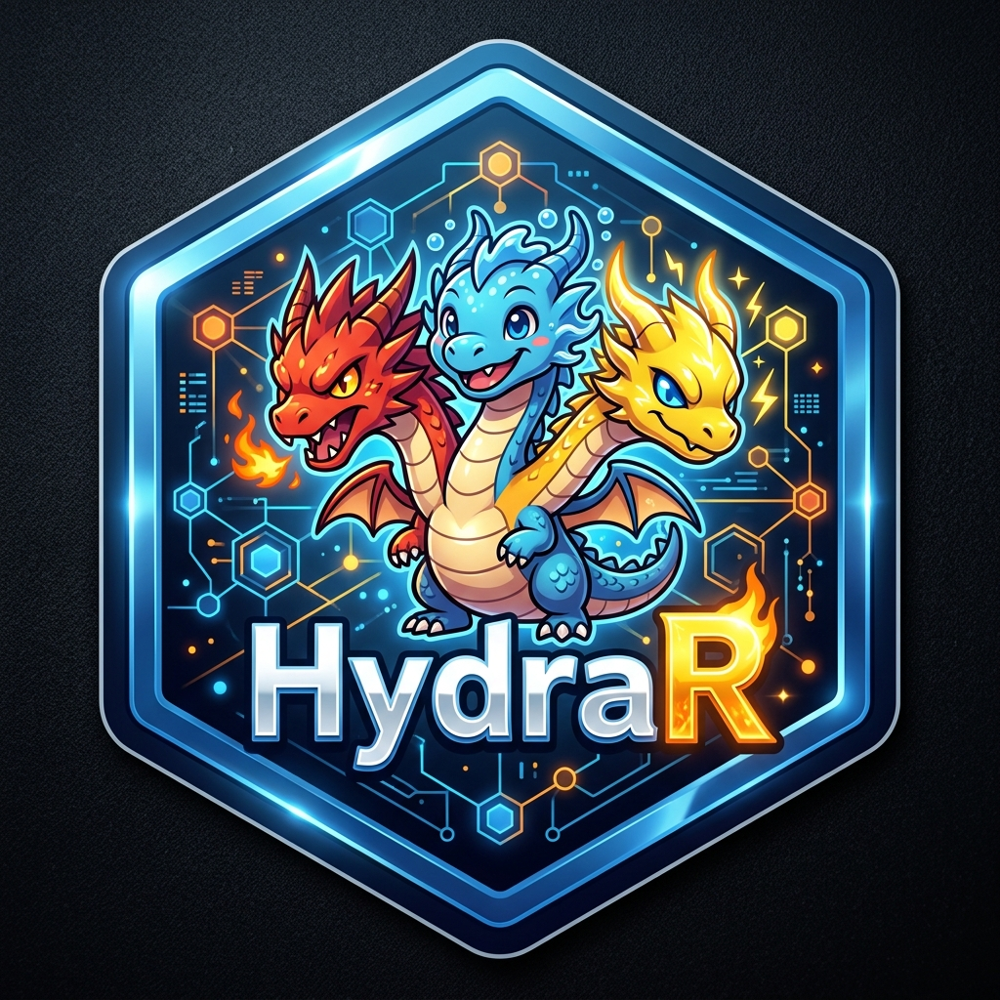

HydraR: Stateful Agentic Orchestration for R
|
 |
HydraR is a lightweight, state-of-the-art orchestrator for building general-purpose agentic workflows in R. It prioritizes CLI-native LLM interactions, hardened state management, and graph-based execution (supporting both Directed Acyclic Graphs and iterative loops).
Why HydraR?
Standard agentic frameworks often rely heavily on brittle API wrappers and volatile state. HydraR is built for durability and reproducibility: - CLI-First: Directly drive high-performance CLI tools like gemini-cli, claude-code, or gh copilot. - Hardened State: Implements a robust state machine with persistent checkpointing (DuckDB/SQLite). - Graph-Native: Design complex logic transitions and loops with built-in validation.
🌐 Ecosystem & Similar Packages
HydraR is an orchestrator, not a low-level API wrapper. While many excellent packages focus on the communication layer, HydraR focuses on the lifecycle, state, and file-system isolation of multi-agent workflows.
-
ellmer: Focuses on high-level UI/API interaction with LLMs.
HydraRcan useellmer(or direct CLI calls) as a backend driver within a larger managed graph. -
mall: Provides a concise syntax for data-mapping LLM calls.
HydraRis designed for more complex, stateful research pipelines with cyclic dependencies. -
gptstudio: Tooling for IDE-centric coding assistance.
HydraRis built for reproducible, non-interactive pipelines and automation. -
reticulate: While
HydraRis R-native, it leveragesreticulateto drive Python-based agentic tools (likegemini-cli) while maintaining the orchestration state in R.
Key Features
-
📍 Graph Orchestration: Define complex agentic workflows using
AgentDAGwith support for parallel execution (furrr) and conditional loops. -
💾 Centralized State:
AgentStateprovides a single source of truth for all nodes, with support for complex reducers and history management. -
🕒 Persistent Checkpointing: Resumable execution threads via
Checkpointer(supporting SQLite/DuckDB). - 🖥️ CLI-First Drivers: High-fidelity drivers for local and provider-based CLIs, ensuring tool calls and environment discovery are robust.
- 📊 Mermaid Visualization: Export your agent’s logic directly to Mermaid.js syntax for interactive documentation.
- 🛡️ Validation Engine: Integrated compile-time checks for undefined nodes, circular dependencies, and unreachable states.
- 🏷️ Node Labeling: Support for human-readable labels in DAG nodes, independent of their unique IDs.
Installation
You can install the development version from GitHub:
# install.packages("devtools")
devtools::install_github("apaf-bioinformatics/HydraR")System Prerequisites
HydraR drives external AI tools via their CLI interfaces. To use the full suite of drivers, ensure your chosen tools are installed and configured.
The Gemini CLI (npm install -g @google/gemini-cli) is provided as an example. You’ll then have to start the tool by typing gemini in the terminal and log into your Google account using the /auth command. You can choose to login using your Google account or provide an API key. Other CLI and API offerings have a similar setup; please refer to the manuals of those providers for information on how to set them up.
Environment Setup
To use the API-based drivers, store your API keys in a .Renviron file in your project root to keep them secure and accessible to HydraR:
# .Renviron
GOOGLE_API_KEY="your_google_api_key"
GEMINI_API_KEY="your_gemini_api_key"
ANTHROPIC_API_KEY="your_anthropic_api_key"
OPENAI_API_KEY="your_openai_api_key"[!IMPORTANT] Ensure
.Renvironis added to your.gitignore,.Rbuildignore, and any AI ignore files (e.g.,.agentignore,.claudeignore) to prevent accidental exposure of your secrets during agentic development.
📖 Documentation & Manual
The primary resource for learning HydraR is the Complete Instruction Manual.
Case Studies & Examples
- 📍 Sydney to Hong Kong Travel Planner: Demonstrates the Zero-R-Code orchestration pattern using YAML and Mermaid.
- 🚀 Parallel Sorting Benchmark: Shows how to use Git Worktrees for isolated, parallel agent execution.
- 💾 State Persistence & Restart: Explains how to use the DuckDB checkpointer for resilient, resumable workflows.
-
🛠️ Creating Custom Drivers: Developer guide on subclassing
AgentDriverfor local LLMs or proprietary APIs. -
🎯 Targets Integration: Explains how to build reproducible, cached pipelines using the
targetspackage.
🛠️ Technical Documentation
For deep technical dives into the orchestration engine and developer tools, refer to the following manuals:
- HydraR Orchestration Manual: YAML anatomy, role definitions, and MCP support.
- HydraR Validation Reference: Full list of compile-time and runtime safety checks.
- Mermaid Orchestration Cheatsheet: Reserved keywords and visual syntax for agent networks.
- Useful Tools Manual: Diagnostic scripts for DuckDB state inspection and monitoring.
-
Integrating HydraR with
targets: Best practices for cached, interrupt-safe agentic pipelines. - Fan-In Implementation & Execution Strategy: Deep dive into how HydraR handles multi-parent dependencies and synchronization.
🤖 Use of Generative AI
- AI-Aided Development: Large Language Models were used to implement specific logic blocks, boilerplate code, and unit tests. Every line of AI-generated code has been manually reviewed and verified by the authors.
- Agentic Orchestration: This package is explicitly designed for the orchestration of autonomous AI agents.
- For a detailed disclosure of AI usage, please refer to the agents.md file.
- For architectural rationale and design tradeoffs, please refer to the DESIGN.md file.
Custom Drivers
HydraR is provider-agnostic. You can extend the framework by creating custom R6 classes that inherit from AgentDriver. This allows you to drive: - Local LLMs: Integration with specialized local CLI wrappers. - Enterprise APIs: Secure connection to internal LLM endpoints via httr2. - Mock Backends: Deterministic drivers for unit testing complex DAG logic.
Refer to the Creating Custom Drivers guide for implementation details.
📊 Visualizing Execution
HydraR includes a powerful visualization engine that goes beyond static DAGs. You can generate status-colored plots after a run to identify bottlenecks and failures.
Interactive Rendering in R
We recommend using the DiagrammeR package to render your DAGs directly in the RStudio Viewer:
library(HydraR)
library(DiagrammeR)
# Generate a status-colored plot after a run
# Green = Success, Red = Failure, Blue = Active path
DiagrammeR::mermaid(dag$plot(status = TRUE))Path Highlighting
The plot(status = TRUE) method automatically correlates your execution trace_log with the graph structure to highlight the exact path taken by the agents, including loops and branches.
Mermaid Round-Trip
You can also define your agentic workflows using pure Mermaid syntax and convert them directly into R objects:
mermaid <- "graph TD\n Start --> End"
dag <- mermaid_to_dag(mermaid, my_node_factory)“Hello World” Example
library(HydraR)
# 1. Define a simple logic node
node_hello <- AgentLogicNode$new(
id = "hello_world",
logic_fn = function(state) {
input_text <- state$get("input")
list(status = "SUCCESS", output = list(message = paste("Hello", input_text)))
}
)
# 2. Build the orchestrator
dag <- AgentDAG$new()
dag$add_node(node_hello)
dag$compile()
# 3. Execute
results <- dag$run(initial_state = list(input = "Hydra"))
print(results$results$hello_world$output$message)
# [1] "Hello Hydra"
# 4. Round-Trip Visualization
dag$plot(type = "mermaid")
# Outputs Mermaid syntax using node labels if provided👥 Authors
- Ignatius Pang (ORCID: 0000-0001-9703-5741) — Lead Architect
- Aidan Tay (ORCID: 0000-0003-1315-4896) — Core Contributor
From the APAF Bioinformatics team at Macquarie University.